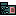

Artifacts >
Artifacts >
 Requirements Artifact Set >
Requirements Artifact Set >
 {More Requirements Artifacts} >
{More Requirements Artifacts} >

Software Requirements Specification
 Artifacts >
Requirements Artifact Set >
{More Requirements Artifacts} >
Artifact:
| ||||||||||||||||
Software Requirements Specification |
The Software Requirements Specification (SRS) captures the complete software requirements for the system, or a portion of the system. When using use-case modeling, this artifact consists of a package containing use cases of the use-case model and applicable Supplementary Specifications. |
| Role: | Requirements Specifier |
| Templates: | |
| Tool Mentors: |
|
| More Information: | |
| Input to Activities: | Output from Activities: |
The Software Requirements Specification (SRS) focuses on the collection and organization of all requirements surrounding your project. Refer to the Requirements Management Plan to determine the correct location and organization of the requirements. For example, it may be desired to have a separate SRS to describe the complete software requirements for each feature in a particular release of the product. This may include several use cases from the system use-case model, to describe the functional requirements of this feature, along with the relevant set of detailed requirements in Supplementary Specifications.
The Software Requirements Specification is used for
collecting your project software requirements in a formal, IEEE 830-type
document, represented by a UML “package” construct. Two sample SRS
templates are provided: one for
use with
use-case modeling (rup_srsuc.dot) and one for use without
use-case modeling (rup_srs.dot). The
first (rup_srsuc.dot) references, or encloses, the use-case-model artifacts:
the use-case model survey, the use-case
reports, and the supplementary specifications.
This allows you to have a formal IEEE-compliant SRS without having to
duplicate the information in these other 3 artifacts.
The second (rup_srs.dot) is an independent document which
contains all
the software requirements directly in the document.
This document would require you to use traceability to use-case artifact
requirements, if they are used. Technically,
they both contain the same information, however the information in the use-case
model is enclosed by reference (rather than being duplicated) in the first and
fully duplicated (if using use cases) in the second, which would require much
more effort in maintaining the traceability relationships.
Since you might find yourself with several different tools for collecting these requirements, it is important to realize that the collection of requirements may be found in several different artifacts and tools. For example, you might find it appropriate to collect textual requirements such as non-functional requirements, Design Constraints, etc, with a text documenting tool in Supplementary Specifications. On the other hand, you might find it useful to collect some (or all) of the functional requirements in the use cases and you might find it handy to use a tool appropriate to the needs of defining the use-case model. For this reason, we will collect the requirements for our SRS in a package which may be a single document or a collection of various artifacts that describe the requirements. (See: Guidelines: Software Requirements Specification)
The SRS package controls the evolution of the system throughout the development phase of the project, as new features are added or modified to the Vision document, they are elaborated within the SRS Package. The following people use the Software Requirements Specification:
The Software Requirements Specification (SRS) captures the complete software requirements for the system, or a portion of the system. Following is a typical SRS outline for a project using use-case modeling. This artifact consists of a package containing use cases of the use-case model and applicable Supplementary Specifications and other supporting information. For a template of an SRS not using use-case modeling, which captures all requirements in a single document, with applicable sections inserted from the Supplementary Specifications (which would no longer be needed), refer to the HTML template for an SRS without use cases.
Many different arrangements of an SRS are possible. Refer to [IEEE830-1998] for further elaboration of these explanations, as well as other options for SRS organization.
Software Requirements Specifications go hand-in-hand with the use cases and Supplementary Specifications, implying that:
A requirements specifier is responsible for producing the Software Requirements Specification (SRS) package, which is an important complement to the use-case model. The SRS Package collects applicable Supplementary Specifications and use cases of the use-case model which together capture a complete set of requirements on the system or a defined subsystem.
Many different arrangements of an SRS are possible. Refer to [IEEE93] for further elaboration of these explanations, as well as other options for SRS organization.
|
Rational Unified
Process
|